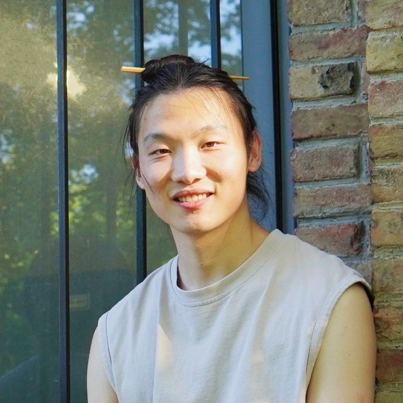

Tsingtao Zhang
Hello, I'm Tsingtao Zhang, a Technical Artist and Graphics Programmer specializing in procedural generation, shader development, and art pipeline design. With a Master's in Game Design and Development from Rochester Institute of Technology. I work at the boundary of art and engineering — building systems that are both visually expressive and technically efficient.
My recent work includes leading a real-time procedural tower defense game at Snowcake Studio, where all geometry is generated at runtime in Unity via HLSL. Prior to that, my award-winning VR capstone Duolatera had me designing asset pipelines, training external artists, and building Python automation tools — all within Unreal 5.
In my life, I'm a bass in choir, a good cook, and a hardcore racing gamer. I once built a steering wheel from motor and PBC boards.
Email: tsingzhang1@gmail.com
